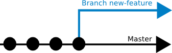
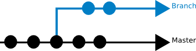
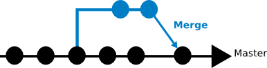
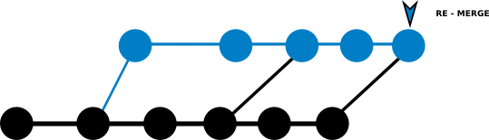

Git
Gestionnaire de version décentralisée
Atelier par Jonathan Pansiot
Typologie du versioning
Le versioning local
Le versioning centralisé
Le versioning décentralisé
L'histoire de GIT
2005 fin du partenariat non-commercial entre Linux et BitKeeper
Installation de GIT
Windows : Insérer ici un lien vers un client windows
Mac : Insérer ici un lien vers un client Mac
Linux intégrer de base. Sur debian ubuntu il demande une maj manuelle vers la version 2.0. Sur fedora c'est déjà en 2.0.
3 états
Local
Commit (staging)
Push (dans le repertoire)

Débuter
$ mkdir new-project
$ cd new-project
$ git init
Git Config
Personnaliser son environnement
$ git config --global user.name "John Doe"
$ git config --global user.email johndoe@example.com
// choisir un éditeur de texte
$ git config --global core.editor emacs
// choisir un outil de merge
$ git config --global merge.tool meld
Commit
Git Status
// Vérifier l'état des fichiers
$ git status
Git Add
// Indexer / Suivre un fichier créé ou modifié
$ git add nom_du_fichier
// Indexer / Suivre tous les fichiers nouvellement créés ou modifiés
$ git add .
// Indexer / Suivre tous les fichiers nouvellement créés ou modifiés et effacés ceux qui sont à effacer.
$ git add -A
.gitignore
Ignorer des fichiers et des répertoires
// Définir les fichiers à ignorer $ nano .gitignore // Si le fichier à déjà été suivi ou indexé $ git rm --cached /fichier-à-ignorerGit commit : Le snapshot
$ git commit --message 'Un message indiquant vos modifications'
$ git commit -m 'message'
// En cas de message mal formulé
$ git commit --amend
Git log
visualiser tous les commits
$ git log
Convention de commit
type (scope): subject
#BLANK LINE
body
#BLANK LINE
footer
Convention de commit : type
feat: A new feature
fix: A bug fix
docs: Documentation only changes
style: Changes that do not affect the meaning of the code (white-space, formatting, missing semi-colons, etc)
refactor: A code change that neither fixes a bug nor adds a feature
perf: A code change that improves performance
test: Adding missing tests
chore: Changes to the build process or auxiliary tools and libraries such as documentation generation
Git diff
visualiser mes changements
$ git diff
$ git diff un_fichier_particulier
Branch
Une fonctionnalité = Une branche
// créer une branche
$ git branch ma-nouvelle-fonctionnalité

// créer une branche puis passer sur cette branche
$ git branch ma-nouvelle-fonctionnalité
git checkout ma-nouvelle-fonctionnalité
// ou directement
$ git checkout -b ma-nouvelle-fonctionnalité
Merge


// Retourner sur la branch master
$ git checkout master
// Voir les différences entres les deux branches
$ git diff master..ma-nouvelle-fonctionnalité
// Merger les deux branches
$ git merge ma-nouvelle-fonctionnalité
// Suivre le merge
$ git add -A
// Nettoyer l'historique en effaçant la branche de la fonctionnalité
$ git branch -d ma-nouvelle-fonctionnalité
Git Rebase
Ou comment avoir un historique propre
Un historique sale
Master évolue

Avoir un historique propre avec git rebase
Master évolue
ATTENTION REBASE NE CONCERNE QUE LES BRANCHES FEATURE JAMAIS REBASE !
Les dépôts distants
Visualiser les dépots distants
// affiche le nom des répertoires distants
$ git remote
// affiche le nom des répertoires distants et l'url
$ git remote -v
Ajouter des dépots distants
// affiche le nom des répertoires distants
$ git remote add [nomcourt] [url]
Cloner un dépot
$ git clone [url]
Tirer sans fusionner un dépot
$ git fetch [url]
Pull & Push
Jamais l'inverse !!!
// fusionne automatiquement dans votre répertoire de travail local
$ git pull
// Pousser son travail dans un repertoire distant
$ git push [nom-distant] [nom-de-branche]
Git Tag
étiqueter votre code
// lister vos étiquettes
$ git tag
// créer des étiquettes annotées
$ git tag -a v1.4 -m 'my version 1.4'
Git Config
Créer des alias
$ git config --global alias.co checkout
$ git config --global alias.br branch
$ git config --global alias.ci commit
$ git config --global alias.st status
$ git config --global alias.unstage 'reset HEAD --'
$ git config --global alias.last 'log -1 HEAD'
Help
$ git help [verbe]
$ git [verbe] --help
$ man git-[verbe]